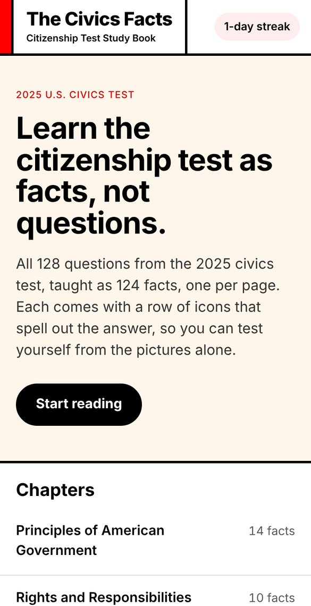

Personal build
Turning a static government question list into a study system.
I'm preparing for my own U.S. citizenship interview. The official study material is a flat list: 128 questions, many with several accepted answers. I rebuilt it as structured data with explicit rules, then directed AI tools to turn it into an interactive study app.
Open the appRead the full case study



The challenge
Existing prep tools copy the official format: question, a list of accepted answers, a quiz. That asks people to memorize more than they need to, ties recall to one wording of each question, and treats 128 items as unrelated even when many share a person, a number or a pattern. The problem was the format, not the content.
The system
Every stage has an explicit rule, so it gives the same result whether I apply it or an AI tool does.
Facts, not questions
Each page states one fact. Several official question wordings link to the same fact, so it can be recalled however it's asked.
One answer each
Where USCIS accepts several answers, each option is scored on distinctiveness, how easy it is to picture, brevity and hook potential. One is taught; the rest stay on record. Every choice is checked against the whole set, which caught a duplicate a section-by-section review missed.
Grouping
Facts that share a person are learned as a set (five facts whose answer is "the President"). Facts that are easy to confuse sit side by side, capped at a few per group so the card never becomes the overload it's meant to fix.
Icon clues
Every icon stands for a word in the answer, so the row reads like a rebus: two seats times fifty states equals 100 senators. Symbols keep one meaning across the app, and facts about sensitive history get plain, literal icons with no wordplay.
Trust
The plain fact and the memory hook are separate layers, so the hook can be playful without risking accuracy. Officeholder answers are flagged to check before an interview, and every fact traces back to the official list.
Directing AI
I owned the audience, the rules, the answer choices and the quality bar. AI tools handled the volume: drafting at scale, writing code, drawing icons. Where it broke was more instructive than where it worked.
Wrong product
The first build was a well-made quiz, which was the wrong product. I hadn't stated how it would be used, so the tool defaulted to the standard for the category. I defined the interaction model and rebuilt it as a book you reread.
Vague direction
Asked for icons, the tool produced topic labels: one scroll stood in for 18 different facts. I rewrote the direction as a rule anyone can test, could you rebuild the answer from the icons alone?, and redrew the full set against it.
Quality gates
Checks against the whole set, not one section at a time, and a plain statement of anything that couldn't be verified.
All 128 questions covered by 124 cards; four pairs share an answer and are taught once. In the curated data, 279 accepted answers became 111 taught facts: 60% less to memorize. 121 of 124 cards carry an icon row that spells out the answer.
With AI, the leverage is in the spec and the quality gates, not the prompt. The valuable work was writing rules precise enough to apply the same way 128 times.